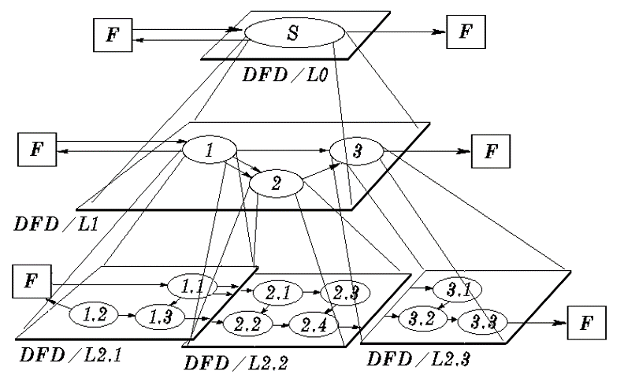
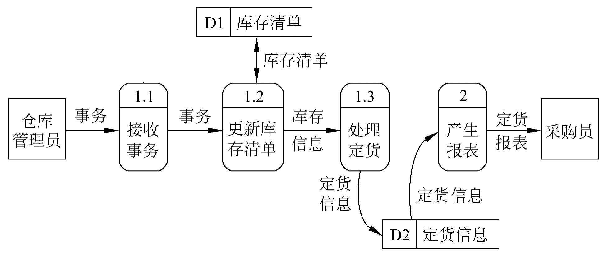

#可行性研究的任务
不是解决问题，而是确定问题是否值得去解决。
分析可能解法的利弊；判定系统规模和目标是否能够实现；效益是否可观。
进一步分析和澄清问题定义；之后导出系统的逻辑模型；从逻辑模型出发，探索主要解法（实现方案）；对每种解法从以下方面研究可行性：
- 技术可行性 现有技术能否实现目标系统？
- 经济可行性 能否收回投资并获得利润？
- 操作可行性 操作方式是否适用于用户组织？
- 法律、社会效益可行性 是否符合法律要求？
#可行性研究的过程
- 复查系统规模和目标
- 研究目前正在使用的系统（完成它的基本功能；解决它存在的问题；增加收入或减少支出）
- 导出系统的高层逻辑模型（数据流图、数据字典）
- 进一步定义问题（分析员与用户复查问题定义、工程规模和目标）
- 导出和评价供选择的解法（从技术等方面研究可行性）
- 推荐行动方针（是否继续进行该项目，若是则选择最佳解法，并进行成本/效益分析）
- 草拟开发计划
- 书写文档提交审查
#系统流程图
系统流程图是概括地描绘物理系统的传统工具。系统流程图表达的是数据在系统各部件之间流动的情况，而不是对数据进行加工处理的控制过程（程序流程图）。 程序流程图是描述过程设计的工具。
#数据流图(DFD)
在数据流图中没有任何具体的物理部件，只是描绘数据在软件中流动和被处理的逻辑过程。
#基本符号
| 符号 | 含义 |
|---|---|
| 正方形或立方体 | 数据源点或终点 |
| 圆角矩形或圆形 | 变换数据的处理 |
| 开口矩形或两条平行线 | 数据存储 |
| 箭头 | 特定数据流动方向 |
#分层
- 顶层（0 层）数据流图。仅包含一个加工，它代表被开发系统。
- 中间层数据流图。对其上层父图的细化，其每一加工可能继续细化，形成子图。
- 底层数据流图。加工不需再做分解（基本加工）的数据流图。

一个数据流图的具体例子：

#数据字典
数据字典是描述数据的信息的集合，是对系统中使用的所有数据元素的定义的集合。系统的逻辑模型由DFD和数据字典共同构成，缺一不可。
#数据字典的内容
- 一般信息。名字，别名，描述等。
- 定义。数据类型，长度，结构等。
- 使用特点。值的范围，使用频率，使用方式（输入，输出，本地），条件值等。
- 控制信息。来源，用户，使用它的程序，改变权，使用权等。
- 分组信息。父结构，从属结构，物理位置（记录、文件和数据库）等。
#定义数据的方法
| 符号 | 含义 | 栗子 |
|---|---|---|
| $=$ | 定义为 | |
| $+$ | 和 | $x = a ＋ b$，表示 $x$ 由 $a$ 和 $b$ 组成 |
| $[.. \mid ..]$ | 或 | $x = [a \mid b]$，表示 $x$ 由 $a$ 和 $b$ 组成 |
| $\{ \}$ | 重复 | $x = 3{a}8$，表示 $x$ 中至少出现 3 次 $a$, 至多出现 8 次 $a$，也可以用上下标的形式表示次数限制 |
| $()$ | 可选 | $x=(a)$，表示 $a$ 可在 $x$ 中出现，也可不出现 |
🌰发票 = 单位名称 + 1{商品名+数量+单价+金额}5 + 总金额 + 日期 + (营业员)
#成本/效益分析
#成本估计
- 代码行技术。人力成本=每行代码成本 $\times$ 代码行数。
- 任务分解技术。对于每个任务，估计人力成本（人月为单位）。
- 自动估计成本技术。采用相关软件自动估算。
#成本/效益分析的方法
- 货币的时间价值。工程经济学 P 和 F 的关系。
- 投资回收期。越短越好。
- 纯收入。越多越好。
- 投资回报率。衡量工程经济效益时最重要的参考依据。
learn more: 工程经济学